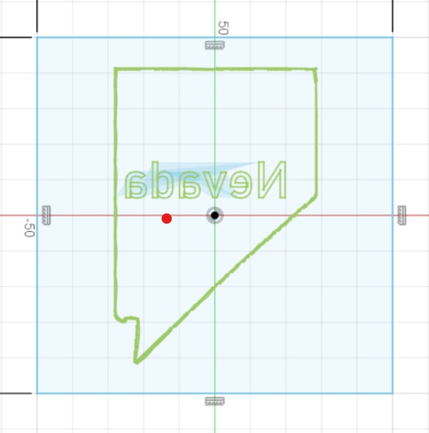
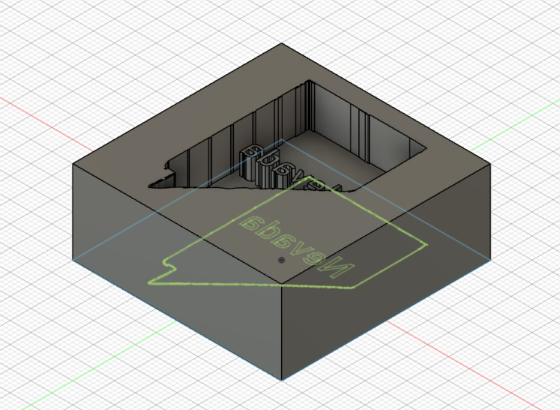

<div class="container-fluid">
### Week 1: Introduction
This week, I was feeling homesick, so I wanted to use milling and molding to create a small desk ornament to remind me of my home state of Nevada. To do that, I first had to design the ornament mold in Fusion360. I began by finding a vector image of the state and importing it into Fusion360. I then used Fusion360's native character writing system to write the word "Nevada" on top of it. Finally, I flipped this design over the Y-axis in preparation for the inevitable molding, so that the design would appear right-side up once molded and flipped.

I then extruded the state outline as well as the letters, and then created a border around the mold to contain it. This created a mold approximately 20 millimeters deep and 50 millimeters in width and length. I then exported this Fusion360 file to STL.

After this, I loaded it into 'mods' and fitted a 1/8th inch bit into the SRM-20 mill. I then put a piece of wax into the mill and started the milling process.